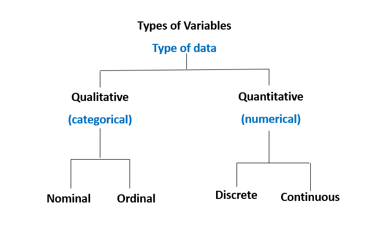

Statistical Methods
Welcome to the session on Statistical Methods! The goal of this session is to help you understand the fundamental concepts of biostatistics and the different types of variables used in data analysis. By the end of this session, you will be familiar with these concepts and ready to explore the two key branches of statistics: descriptive and inferential.
By the end of this chapter, students will:
Understand key concepts in biostatistics
Be able to differentiate between types of variables
Be able to differentiate between the two major parts of statistics: descriptive and inferential analysis
Introduction to Biostatistics and Types of Variables
Biostatistics
Biostatistics is the application of statistical methods to biological and medical data. It helps clinicians make informed decisions based on data collected from clinical trials, observational studies, and patient records.
Variables
If, as we observe a characteristic, we find that it takes on different values in different persons, places, or things, we label the characteristic a variable.
For example, if we are observing the characteristic’height’ in a group of people, we will notice that height varies from person to person. Therefore, height is a variable.
Types of Variables
Variables are essential in data analysis and are categorized into four types:

Nominal Variables: Categorical variables with no inherent order (e.g., blood type: A, B, AB, O).
Ordinal Variables: Categorical variables with a meaningful order but unequal intervals (e.g., pain scale: mild, moderate, severe).
Discrete Variables: Numerical variables with distinct, countable values (e.g., number of patients in a clinic).
Continuous Variables: Numerical variables that can take any value within a range (e.g., patient weight, height).
Two Major Parts of Statistics
Statistics is divided into two main areas:
Descriptive Statistics: Summarizing and describing data.
Inferential Statistics: Making predictions or inferences about a population based on a sample.
Explore the following chapters to deepen your understanding of descriptive and inferential statistical methods, as well as how to implement these techniques using R.